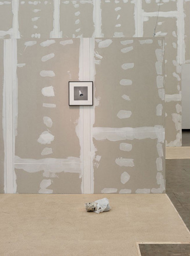
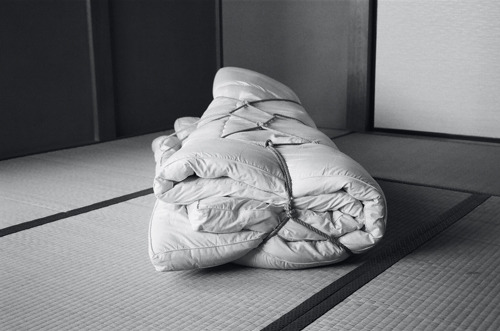

| about contact |
Performance - Körper als Kontinuum in der Kunst / Performance – The with Cäcilia Brown, Kerstin von Gabain, Kathi Hofer, Natalia LL, Marko Lulić, Johanna Reich, Elfie Semotan, Ene-Liis Semper, Marina Sula, Jaan Toomik, Paul Wiersbinski |
 |
| Noodle House – event with Kerstin von Gabain, Irina Gavrich and GON, Vienna, 8.8.2018, Photo: Irina Gavrich Deckard is introduced to us sitting in an Asian noodle bar wanting to be left alone before being hassled into resuming blade running. From that moment on the ubiquitous noodle shop has become the perfect close up of a metropolis set in a dystopian future. The simple diner serving up Asian food offers a temporary sanctuary for night owls and recluses alike. It becomes not only a place where the hungry can get provisons or shelter from the rain but where the basic human can get some rest from a world of man and machine. |
| Ordination, Garnisongasse 12, Vienna, 19.7. – 18.8.2018, curated by Kerstin von Gabain and Sophie Tappeiner Victoria Adam, Kerry Downey in collaboration with Joanna Seitz, Zuzanna Czebatul, DWMC, Claude Eigan, Bernhard Frue, Gelitin, Martin Grandits, Item on loan from Josephinum, Birgit Jürgenssen, Tomasz Kowalski, Klara Lilja, Angelika Loderer, Johann Neumeister, Anna Paul, Hanna Putz, Alex Ruthner, Ellen Schafer, Siggi Sekira, Elfie Semotan, Astrid Wagner, Hans Weigand (…) No one enters a doctor’s without expectations. It’s an emotionally charged location. For decades, it has seen a never ending ceasing stream of patients feeling a strange mixture of shame and hope, fearing unimaginable pain and sometimes leaving feeling total salvation. Deprived of its true function and desecrated by the absence if its usual protagonists, an exhibition in such a place leaves limited physical and intellectual space for the works on display. New objects join the silent witnesses of past events, renewing the body and flesh of the space (whether natural or prosthetic). These things replace and liberate its imagined conventional visitors, sometimes humorously, sometimes playing with associations that point elsewhere. The art becomes a cure for the place. The visitor replaces the absent dermatologist, also concluding by looking at the surface. Moritz Stipsicz |
| http://kubaparis.com/ordination/ |
| CÄCILIA BROWN KERSTIN VON GABAIN THEA MOELLER ALEXANDER RUTHNER MARINA SULA, Gabriele Senn Galerie, Vienna, 27.4. - 16.6.2018 |
| El Centro 2, Kerstin von Gabain & Thea Moeller, Galerie Kunstbüro, Vienna, 23.3. – 19.4.2018 |
| http://kubaparis.com/kerstin-von-gabain-thea-moeller-el-centro-2/ |
| Gespräch zwischen Kerstin von Gabain und Thea Moeller veröffentlicht anlässlich der Ausstellung El Centro 2, Graphik Design: Ismini Adami |
| Kerstin von Gabain: Vom Appetitlichen und vom Unheimlichen, Anne-Katrin Fessler, Der Standard, 28.11.2017 |
| Kardinal König Preis 2017, Photo: Ismini Adami |
| Dollhouse of A Poem 2017, Praterstr. 32, Vienna, 2.6.2017, curated by Kerstin von Gabain and Nino Sakandelidze with Ismini Adami, Daphne Ahlers, Minda Andren, Nouria Behloul, Adrian Buschmann, Rani Bageria, Alessio Delli Castelli, Simone Carneiro, Schirin Charlot, Clegg & Guttmann, Dark Disko (Rade Petrasevic/Philipp Ruthner) Marco Dessi, Daniel Ecker, Philipp Friedrich, Bernhard Frue, Kerstin von Gabain, Marcus Geiger, Franz Graf, Martin Grandits, Begi Guggenheim, Hannah Hansel, Anne Hardy, Max Henry, Richard Hoeck, Natia Kalandadze, Benedikt Ledebur, Michael Lukas, Constantin Luser, Albert Mayr, Emma McMillan, Thea Moeller, Johann Neumeister, Daniel Peterson, Roshi Porkar, Noushin Redjaian, George Rei, Rosa Rendl, Daniel Richter, Alex Ruthner, Hanno Schnegg, Björn Segschneider, Nino Sakandelidze, Ania Shestakova, Tamuna Sirbiladze, Nino Stelzl, Lilli Thießen, Sophie Thun, Cathrin Ulikowski, Franz West, Anita Witek, Sasha Zalivako, Edin Zenun, Heimo Zobernig, Christina Zurfluh |
| Moi Non Moi or Carrying Owls to Athens, Wiener Art Foundation, 7.5. – 7.7.2016, curated by Amer Abbas and Stefan Bidner with Irini Athanassakis, Stefanie Binder, Cäcilia Brown, Thomas Feuerstein, Andreas Fogarasi, Marcus Geiger, Sophie Gogl, Franz Graf, Martin Grandits, Begi Guggenheim, Ilse Haider, Stelios Karamanolis, Victor Lizana, Anastasios Logothetis, Michael Lukas, Marko Lulic, Constantin Luser, Albert Mayr, Christoph Meier, Johann Neumeister, Katherina Olschbaur, Panos Papadopoulos, Natasha Papadopoulou, Parastu, Rade Petrasevic, Hans Werner Poschauko, Claudia Plank, Christian Rosa, Corinne L. Rusch, Alex Ruthner, Nino Sakandelidze, Hans Schabus, Toni Schmale, Johannes Schweiger, Björn Segschneider, Nino Stelzl, Sofia Stevi, Stefania Strouza, Philipp Timischl, Jannis Varelas, Kerstin von Gabain, Astrid Wagner, Franz West, Erwin Wurm |
| Shape Shift – an evening dedicated to works by Kerstin von Gabain, Begi Guggenheim and Tina Lechner. 4.4.2017, hosted by Nicole Adler and Anita Witek |
Pro(s)thesis, Gemäldegalerie, Akademie der bildende Künste, 10.3 – 14.3.2017, curated by Berenice Pahl and Felicitas Thun-Hohenstein with Kerstin von Gabain, Anne Imhof, Birgit Jürgenssen, Barbis Ruder, Toni Schmale, Anne Schneider The guiding motif of this exhibition is the prosthesis as a metaphor for transformation processes and the biological-technological permeation of the body. The idea is already suggested in the title, which superimposes the words prosthesis and prosthesis (the Ancient Greek term for the display of a dead body) … … In the adjacent Bosch Room, Kerstin von Gabain takes Hieronymus Bosch’s phantasmagoric visions as a starting point and confronts his famous winged altar depicting The Last Judgment with her installation Symposium on the Dark Ages, 2017. Hieronymus Bosch developed his dark observations about the human race and its almost unsalvageable entanglement in everyday sins in the transition from the late medieval to the early modern period. In his cryptic, often terrifying, archaic images, he describes the condition of the human body in various aggregate states across the entire human condition. Kerstin von Gabain subjects the phantasms of inorganic, anagrammatic, and fragmented physiques connected to this at once paradisiacal and apocalyptic context to a pornographic-anatomical gaze. An installation with three tables serves as a horizontal counterpart to the plates of Bosch’s triptych: a tableau for the arrangement of von Gabain’s Symposium on the Dark Ages. Not without a nonchalant smile on her face, the artist constructs a colourful, multifaceted spectrum whose protagonists are cast-wax bony hybrids. The plaster molds originally cast as negatives from the artist’s individual body parts appear as positive wax casts. These monstrous objects reminiscent of long bones full of marrow evoke images of animal, organic, vegetable parts as well as images of deliciously sweet things. Von Gabain’s tableau of hybrids emerges from the reflection of Bosch’s counterpart: a mapping of things belonging to the body and things alien to the body, of self and non-self. After all, the artificial parts are symbols, “doubles” without their own identity that merely pretend to be part of the body. Felicitas Thun-Hohenstein |
Left: Detail ‘The Last Judgement’ c. 1482 Hieronymous Bosch The title Symposium on the Dark Ages refers to a publication from the 1960s, a symposium on archaic Greek art, but also serves as a reference to the Middle Ages from which the Renaissance emerged. The installation is presented as a spatial juxtaposition to the Last Judgement triptych by Hieronymus Bosch and consists of three tables on which various wax objects are placed. The dimensions of the three light pink tabletops, correspond to the dimensions of the respective three panels of Bosch’s paintings and the whole installation can thus be read as a kind of horizontal altarpiece. The wax objects distributed on the table are casts of cross-sections of various limbs of the artist herself. The small-scale, candy-colored objects seem randomly placed and edible in their appearance, on closer examination of the bone marrow-like cross sections, however, the perception tilts into the uncanny and the altar table becomes a dissecting table. |
| Kerstin von Gabain, Gabriele Senn Galerie, Vienna, 10.3.2017 - 29.4.2017 The exhibition brings together a constellation of Kerstin von Gabain’s wax and plaster sculptures of vegetables, fruit, and body parts. Building on previous work, the exhibition further explores how von Gabain considers and plays with the space between objects and their representation, the evolution and exchange between sculpture and photography, which are the recurring elements and processes underlying her oeuvre. The cross sections of bones are cast from her arms and legs and hollowed out through sanding to resemble bone marrow. Unlike the putrefaction of Paul Thek’s meat sculptures, however, von Gabain’s objects are abstract and candy colored. The pieces are handmade yet resolutely perfect, subversively fresh and immediate. Through their mediation via postcard-sized photos, they serve as memento mori that are garish in their eternality, and yet suggest a knowledge too small, a lifespan too short. The objects rest on plinths of concrete, acrylic glass, and MDF laminated or painted pink, which further juxtaposes their aesthetic and conceptual volatility, as well as renders them unfit for consumption; their eccentric connections to one another suggest the biopolitics of breeding, the regulation of the path toward consumerhood, as well as the collective unchartedness of our civilization. Helen Young Chang |
| Invite Kerstin von Gabain, Gabriele Senn Galerie, Vienna |
| My leg, 2017, soap 12,5 x 15 x 5 cm, Edition 10 + 2AP |
| Out getting ribs: Book presentation and talk with Felicitas Thun-Hohenstein, Secession, 18.1.2017, 7 pm, Graphic Design: Ismini Adami |
| El Centro, Kerstin von Gabain & Thea Moeller, Petra Martinetz Galerie, Cologne, 4.11. – 6.11.2016 |
Painting is not the Issue, Neuer Kunstverein Wien, curated by Felicitas Thun-Hohenstein, 10.11.–27.11.2016 with Iris Dittler, Kerstin von Gabain, Evelyn Plaschg, Noushin Redjaian |
| Artist statement, Parallel Vienna, 21.9 – 27.9.2016, Graphic Design: Ismini Adami |
| Bonalism, Soiree Berkson, Vienna, kuratiert von Itai Margula, 21.6.2016 |
| Gespräch mit Sebastian Hackenschmidt veröffentlicht anlässlich der Präsentation Bonalism, Soiree Berkson |
The language of things - material histories from the collection, 21-er Haus, Belvedere, Vienna, curated by Luisa Ziaja and Axel Köhne, 10.6. – 22.1.2017 with Franz Amann, Carl Andre, John M Armleder, Richard Artschwager, Josef Bauer, Thomas Baumann, Julien Bismuth, Andy Boot, Herbert Brandl, Gilbert Bretterbauer, Cäcilia Brown/Wilhelm KLotzek, Andy Coolquitt, Andreas Duscha, Judith Fegerl, Robert Filliou, Dan Flavin, Andreas Fogarasi, Kerstin von Gabain, Gelatin, Julian Göthe, Manuel Gorkiewicz, Franz Graf, Eva Grubinger, Michael Gumhold, Robert F. Hammerstiel, Gregor Hildebrandt, Benjamin Hirte, Anna Jermolaewa, Donald Judd, Barbara Kapusta, Jakob Lena Knebl, Roland Kollnitz, Brigitte Kowanz, Susanne Kriemann, Sonia Leimer, Anita Leisz, Inés Lombardi, Constantin Luser, Dorit Margreiter, Ralo Mayer, Adam McEwen, Robert Morris, Marlie Mul, Ulrike Müller, Walter Obholzer, Lisa Oppenheim, Rudolf Polanszky, Rosa Rendl, Gerhard Richter, Valentin Ruhry, Fred Sandback, Stefan Sandner, Stefanie Seibold, Tony Smith, Daniel Spoerri, Lucie Stahl, Rudolf Stingel, Zin Taylor, Sofie Thorsen, Christoph Weber, Lois Weinberger, Franz West, Erwin Wurm, Heimo Zobernig, Franz von Zülow |
de Oculis - Die Sammlung Aichmair im Josephinum, Vienna, curated by Moritz Stipciz, 11.3. – 8.10.2016 - M.S /C.B |
| Hello, I like you 2016, permanent neon light installation, Josephinum, Vienna |
| MAK-Schindler Scholarship Program at the Mackey Apartments, Los Angeles |
| Reckless Painting 2016 presented at the Residency show: Final Projects Group XLI at the Mackey Apartments, Los Angeles, 11.3. – 12.3. 2016 |
Objets Trouves, Hofstätter Projekte, Vienna, 20.5. – 17.7.2015, curated by Edelbert Köb, photo: Sophie Thun with Hannes Böck, Kerstin von Gabain, Guido Kucsko |
|  |
Destination, 2015, Kunsthalle Wien, Vienna, 17.4 – 31.5.2015, curated by Marie Egger, Anne Faucheret, Lucas Gehrmann, Luca Lo Pinto, Matthias Nothnagel, Andrea Popelka, Nicolaus Schafhausen with Adrian Alecu, Ovidiu Anton, Anna Artaker, Kurdwin Ayub, Josef Bauer, Cäcilia Brown, Adrian Buschmann, Hugo Canoilas, Julian Charrière, Mitya Churikov, Los Destinados (Julius Deutschbauer / Klaus Pobitzer / Panos Mylonas), Eva Egermann, Christian Eisenberger, Christian Falsnaes, Marina Faust, Lukas Feigelfeld, Daniel Ferstl, Andreas Fogarasi, Heinz Frank, Heribert Friedl, Peter Fritzenwallner, G.R.A.M., Kerstin von Gabain, Till Gathmann, Aldo Giannotti, Sofia Goscinski, Julian Göthe, Eva Grubinger, Harald Gsaller, Rebekka Hagg, Michael Heindl, Nicholas Hoffman, Ana Hoffner, David Jourdan, Barbara Kapusta, Eric Kläring, Tonio Kröner, Tina Lechner, Sonia Leimer, Paul Leitner, Constantin Luser, Nana Mandl, Christian Mayer, Ralo Mayer, Sarah Mendelsohn, Melitta Moschik, Hans Nevidal, Josip Novosel, Denise Palmieri, Michael Part, Nicola Pecoraro, permanent breakfast (Friedemann Derschmidt / Abbé Libansky / Karin Schneider / Barbara Zeidler), Lilly Pfalzer / Sergio Valenzuela, Karin Pliem, Johannes Porsch, Hanna Putz, Andreas Reiter Raabe, Ritornell, Valentin Ruhry, Maruša Sagadin, Ari Sariannidis, Johann Schoiswohl, Leander Schönweger, Misha Stroj, Philipp Timischl, Jenni Tischer, Octavian Trauttmansdorff, Nadim Vardag, Salvatore Viviano, Astrid Wagner, Tanja Widmann, Birgit Zinner |
| Bad Pringle, Gabriele Senn Galerie, Vienna, 20.3. – 23.4.2015 |
| Review: Kerstin von Gabain by Bettina Brunner, Frieze d/e, Issue 20, June – August 2015 |
|
bad pringle from herbert drehtvoll on Vimeo. |
The Art Gallery of Rogues, Büro Weltausstellung, Wiener Art Foundation, Vienna, 13.3. – 27.3.2015 why is batman actually not called mouseman considering he has much more in common with the ordinary house mouse than with bats? even though he has a cave, he doesnt inhabit it but uses it only as a hiding place in case of danger, similar to a mouse retreating into a hole. he also doesnt sleep there hanging from the ceiling but does so in a warm bed in a villa. everyone who ever suffered a mouse infestation knows all to well that these animals have a marked preference for nesting in beds, blankets and cushions. bats on the contrary do keep their bodies mutually warm while sleeping and are therefore mostly found in larger groups, forming colonies. batman on the other hand is a loner. also he is not capable of active flight. he only glides through the air with his cape because he neither has webbed wings like bats nor superhuman powers like superman for instance. he only pretends to be flying, like a mouse with a parachute would. but the most important feature that both batman and mice dont share with bats are fangs and the sucking of blood. although very view species of bats actually do drink blood, the image of the bat as a vampire is nonetheless so prevalent in our culture that one has to assume that also in the case of batman this association will sooner or later suggest itself to everyone. but if batman is by name a bat ergo vampire, then why does he have all the traits of a harmless little house mouse and none of the bloodsucking and infectious bats/vampires? the answer to this question is quite simple: because batman is a vampire pretending to be a mouse. |
| Artist book published on the occasion of the exhibition Kerstin von Gabain – The Art Gallery of Rogues at Büro Weltausstellung Wiener Art Foundation – edition of 100 with an etching signed and numbered. Graphic Design: Ismini Adami |
Der Blick und das Queren, Markhof 2, 21.2. - 20.3.2015, kuratiert von Martin Vesely with Kerstin von Gabain, Robert Gruber, Anja Manfredi, Mads Westrup |
|  |
Sleepless - the bed in history and contemporary art, Belvedere, 21-er Haus, 30.1. – 7.6.2015, curated by Mario Codognato with Miles Aldridge, Nobuyoshi Araki, Diane Arbus, Rudolf Bacher, Georg Baselitz, Franz von Bayros, Cecil Beaton, Vanessa Beecroft, Richard Billingham, Herbert Boeckl, Pierre Bonnard, Marino Bovi, Cecily Brown, Agostino Carracci, Jota Castro, Jake & Dinos Chapman, Anetta Mona Chi?a & Lucia Tkácová, Larry Clark, Francesco Clemente, Gustave Courbet, Michael Craig-Martin, Gregory Crewdson, John Currin, David Dawson, Lucinda Devlin, Philip-Lorca diCorcia, Otto Dix, Sante D’Orazio, Leopold Johann Dorfstätter, Marcel Duchamp, Jimmie Durham, Martin Eder, Elmgreen & Dragset, Tracey Emin, James Ensor, VALIE EXPORT, Werner Feiersinger, Martha Fein, Domenico Fiasella, Urs Fischer, Fischli & Weiss, Peter Flötner, Lavinia Fontana, Heinz Frank, Lucian Freud, Kerstin von Gabain, Ryan Gander, Artemisia Gentileschi, Bruno Gironcoli, Robert Gober, Nan Goldin, Dominique Gonzalez-Foerster, Douglas Gordon, Antony Gormley, Francisco José de Goya y Lucientes, Heidi Harsieber, Mona Hatoum, Damien Hirst, Howard Hodgkin, Ludwig Hoffenreich, Richard Horlemann, Rachel Howard, Alfred Hrdlicka, Jörg Immendorff, Birgit Jürgenssen, Johanna Kampmann-Freund, Herwig Kempinger, Fritz Kern, Anselm Kiefer, Martin Kippenberger, Douglas Kirkland, Ronald Brooks Kitaj, Gustav Klimt, Pierre Klossowski, Jannis Kounellis, Paul Kranzler, Alfred Kubin, Hans Kupelwieser, Yayoi Kusama, Jim Lambie, Maria Lassnig, Louise Lawler, Gonzalo Lebrija, Erich Lessing, Sherrie Levine, Max Liebermann, Pietro Falca detto Longhi, Los Carpinteros, Sarah Lucas, Meister mit den Blumenrahmen, Meister der Divisio Apostolorum, Meister von Großgmain, Inge Morath, Otto Muehl, Ugo Mulas, Vik Muniz, Johann Michael Neder, Shirin Neshat, Helmut Newton, Hermann Nitsch, Yoko Ono, Pablo Ruiz Picasso, Walter Pichler, Giulia Piscitelli, Michelangelo Pistoletto, Robert Polidori, Robert Rauschenberg, Man Ray, Josef Karl Rädler, Johann Baptist Reiter, Bettina Rheims, Gerhard Richter, John Riddy, Rembrandt Harmenszoon van Rijn, Thomas Ruff, Ed Ruscha, Erich Salomon, Caspar Franz Sambach, Egon Schiele, Markus Schinwald, Gundula Schulze Eldowy, Johnnie Shand Kydd, Sudarshan Shetty, Dayanita Singh, Alexandre Vincent Sixdeniers, Jan van der Straet, Mikhael Subotzky, Harunobu Suzuki, Antoni Tàpies, Juergen Teller, Liliane Tomasko, Oliviero Toscani, Rosemarie Trockel, Kaari Upson, Borjana Ventzislavova, Manfred Wakolbinger, Nari Ward, Franz West, Rachel Whiteread, Francesca Woodman, Tobias Zielony und Gilberto Zorio |
CÄCILIA BROWN KERSTIN VON GABAIN KATHI HOFER MARKO LULIC BARBARA MUNGENAST ELFIE SEMOTAN HANS WEIGAND, Gabriele Senn Galerie, Vienna, 16.1. – 14.3.2015 |
| Das FH-Projekt, 152 Seiten, 18 s/w-abb., Format: 16,5 x 22,5 cm, Deutsch, Brochiert, Grafik Design: Ismini Adami, Berlin 2014, Revolver Verlag |
| Review: Nicht trennen, was nicht zu trennen ist / Susanne Leeb über jüngere Publikationen zu Otto Mühls Friedrichshof Kommune, Texte zur Kunst, Heft 97, 2015 |
| Kerstin von Gabain - ein Abend in der Perspektive der Fotografie, Vesch, Vienna, 11.11.2014, curated by Martin Vesely |
| Getränke 2, Cumberland-Stub’n, Vienna, 29.9.2014, curated by Hanno Schnegg, Nino Stelzl and Marianne Vlaschits with Schirin Charlot, Cut and Scrape, Daniel Ferstl, Kerstin von Gabain, Franz Graf, Martin Grandits, Elisabeth Grübl, Sabine Heine, Axel Huber, Mike Inzinger, Thomas van der Jeught, Andreas Klotz, Marika Konstantinidou, Tobias Lintl, Michael Lukas, Helmut Mark, Leni Michl, Milan Mladenovic, Johann Neumeister, Josip Novosel, Panos Papadopoulos, Elisbeth Penker, Rade Petrasevic, Begi Piralishvili, Lucia Elene Prusa, Raphaela Riepl, Alex Ruthner, Felix Scheiblauer, Hanno Schnegg, Miriam Schwahn, Miriam Schweiger, Katharina Soskic, Nino Stelzl, Marina Sula, Julian Tromp, Dennis Tyfus, Helene van Duijne, Sanja Velickovic, Marianne Vlaschitz, Herwig Weiser, Edin Zenun |
POST WEST – WEST POST, Display window, Büro Weltausstellung, Vienna, 9.9. – 5.10.2014, curated by Marina Sula, Photo: Sophie Thun with Ismini Adami, Helene van Duijne, Kerstin von Gabain, Sophie Thun |
Object’s of China, Sotheby’s Artist Quarterly, Vienna, April – June 2014 In ihrer Ausstellung Objects of China zeigt kerstin von Gabain eine Serie schwarz weißer Siebdruck, die Bilder von taxidermisch behandelten Tieren - Ratten und Vögeln - zum Thema hat- Die Künstlerin arbeitet hier mit in China aufgestöberten Laterna Magica Glasdias, deren ursprünglicher Verwendungszweck Rätsel aufgibt. Auf den gereinigten Objektträgern, deren Abbild Kerstin von Gabain mittels Siebdruckverfahren auf Großformatiges Papier übertragen hat, sind deutlich Schatten und Raster zu erkennen. Sind letztere beim Drucken auf die Glasplatte der handelt sich um abfotografierte Drucke? Während die Schatten auf das erneute Abfotografieren eines Bildes schließen lassen, bleibt die Herkunft der Raster unerklärt. Durch das Medium des Siebdrucks erreicht die Künstlerin, dass die verschiedenen Bildebenen, die Grobkörnigkeit des Liniennetzes und das Wechselspiel der Schatten auf das Papier zu einer Einheit verfließen: neben dem mosaikartigen Effekt ergibt sich eine monochrome Interaktion zwei- und dreidimensionaler Eindrücke, die im Bild scheinbar um Vorherrschaft ringen. |
Raver geht ins archäologische Museum, Secession, Vienna, 11.4. – 8.6.2014 The photographs of plaster casts of limbs—some embedded in narrative theatrical productions—and assemblages made of plaster fragments are based on Gabain’s extended experimentation with the sculptures. Rather than being the final product at the end of an artistic process, her sculptures represent a starting point for playful enactments which she then captures in analogue, black-and-white photographs. The artist photographed the individual sculptures isolated against a black or grey background with a seemingly objective eye—an eye that imitates the sober and systematic recording of objects in a style reminiscent of the photographs used to document and inventory collections in museums or for scientific research. |
 |
| Rave/Health, 2014, Plaster, leather, metal, each 32 x 27 x 9 cm, Photo: Jorit Aust |
| After Hour, 2014, plaster, woodfiller, 12 x 12 x 14 cm, Photo: Jorit Aust |
| Left: Greek Sculpture by Nigel Spivey right: Urfuss, 2013, b/w Photography |
| Raver geht ins archäologische museum, 64 Pages, 230 x 210 cm, Texts: Herwig Kempinger/Bettina Spörr, Alessio delli Castelli, Christian Höller, German/English, Graphic Design: Ismini Adami, Secession 2014, Revolver Verlag |
| Roll over and play dead by Alessio delli Castelli published on the occasion of the exhibition Raver geht ins archäologische Museum 2014 |
| If sports is the brother of labor, then art is the cousin of unemployment, CAMP, Athens, 13.9 – 11.10.2013, curated by Panos Papadopolous and Nino Stelzl with Ismini Adami, Eleni Bagaki, Margarita Bofiliou, L&A lonas/The Callas, Shirin Charlot, Cut and Scrape, Helene van Duijne, Marina Faust, Michael Fischer, Kerstin von Gabain, Markus Geiger, Martin Grandits, Mario Grubisic, Axel Huber, Anna Jemolaewa, Katerina Kana, Marika Konstantinidou, Chrysanth, Kournianaki, Michael Lukas, Albert Mayr, Milan Mladenovic, Johann Neumeister, Kosmas Nikolaou, Katherina Olschbauer, Panos Papodopolous, Elisbeth Penker, Rade Petrasevic, Chloe Potter, Quenberger vs Elin, Björn Segschneider, Nino Stelzl, Lilli Thiessen, Amalia Vekri, Sanja Velickovic, Paki Vlassopoulou, Selena Vronti, Krina Vronti, Valerios, Dorota Walentynowics, Hans Weigand, Lukas Willmann, Woozy |
| Solo presentation, Gabriele Senn Galerie, Vienna Contemporary, 2013 |
| City of broken Furniture, MAK, Austrian Museum of Applied Arts / Contemporary Art, Vienna, 20.3. – 26.5.2013, curated by Janina Falkner It is in a targeted manner that Kerstin von Gabain reacts both to the “clean” aesthetic of the MAK Study Collection and to the scholarly paradigm of museum practice. Her medical-seeming sculptural interventions and strictly stylized photographs of objects allude quite deliberately to scenarios from a sanatorium or hospital. In her series of sculptures, the artist bandages and treats her previously “injured” pieces of furniture in a manner that is playfully medical, presenting scenes of imaginary suffering and abnormalities. She distributes her being-like objects around the room much like a hospital might distribute its patients. Von Gabain also photographs seating furniture from the MAK Furniture and Woodwork Collection. In doing so, her intent is to appropriate the classical pictorial composition and technique used in 19th-century medical portrait photography, as well as 19th-century methods of criminalistics. Photography as an archival tool and viewing material for phenomenological-empirical study and/or classification is of interest to the artist in the context of her examination of the MAK Study Collection. By way of parody, von Gabain also uses names, pathological systematizations, and subject typologies from the 19th century for her works’ titles. She presents objects in light of how they deviate from the norm, lending them a freak-like status. In this way, she compares the classification scheme of a knowledge-oriented display collection with that of a cabinet of curiosities. The objects, some of which seem comically monstrous, thus become a projective surface for both subjective states and institutional patterns of classification. Janina Falkner |
 |
| Left: film still Lars von Trier, Riget (The Kingdom), 1994 Right: MAK Vienna, aerial view, 1990s |
| Top: exhibition view City of broken furniture 2013, photo: Bottom: Francisco de Goya Casa de locos, 1812 -1819 In the exhibition City of broken furniture (2013) at MAK (Österreiches Museum für angewandte Kunst –Austrian Museum for Applied Arts) Kerstin von Gabin presented a series of furniture pieces which do not belong to the museum collection. As well as allowing her to manipulate them to her liking, these chairs, table, wardrobe and hat-stand understated a witticism - the infiltrated furniture stood for middle-class relations at a party thrown for the aristocratic residents of MAK. These pieces had undergone various degrees of personification. Kerstin von Gabin had either deliberately maimed them or simply collected shoddy furniture that she equally treated as wounded, injured or concussed patients. The mere fact of putting something in slings was enough to achieve humanisation. Since the function of furniture consists in constructing a hollow space to host people and their belongings, the deletion of utility and the retention of structure allow the human imprint to come to the foreground. This personification increased as the whole nature of the exhibition room was carefully considered. Kerstin von Gabin highlighted all that might have been fastidious - the long and narrow structure of the room, the extraneousness of the radiators and the small basement windows with their imposing shutters high above. Two chairs that sat near the radiators and windows made the whole room look like a hospital ward with patients seeking warmth and light. Alessio delli Castelli |
| Floor plan of the exhibition City of broken furniture MAK |
| Seoul Residency |
| Out getting ribs, Gabriele Senn Galerie 23.3. – 28.4.2012 Last year I got the opportunity to live and work in Tokyo for a few months. When I arrived at the studio in Arakawa (a suburb of Tokyo, that has a partnership and some similarities with the district Floridsdorf of Vienna), I found a clinically sterile cleaned and empty house. Just the closets were crammed with obviously very old, worn-out mattresses. Probably each mattress tells its own story. The ground floor of the house had a traditional “Japanese room”. Here I started to tie up the mattresses in order to photograph them. After the work was done, I untied the mattresses and packed them away, only to take them out later to tie them up again. My procedure corresponded to the conception of how a traditional Japanese room is used; After an activity used items, such as furniture, are packed away neatly. With its strict division into a certain number of “tatamis” (rice mats) the room provided a three-dimensional grid for my tied up creatures – just like a 3D graphic program. I photographed efficiently, without a tripod, balancing on a ladder, shooting my subjects from all possible perspectives using an analog camera, which decisively influenced my workflow. To see the results, I had to wait for the development of the film rolls in the laboratory, which in this case meant several trips to the other side of Tokyo. Many rolls were under- or overexposed, blurry and out of focus. Some “bindings” were photogenic, whereas others did not do so well on film. Some films turned out better, while others less, just like my days in Tokyo. |
| Invite Out getting ribs |
| From Japanese Homes and Their Surrounding by Edward S. Morse |
|
out getting ribs from herbert drehtvoll on Vimeo. |